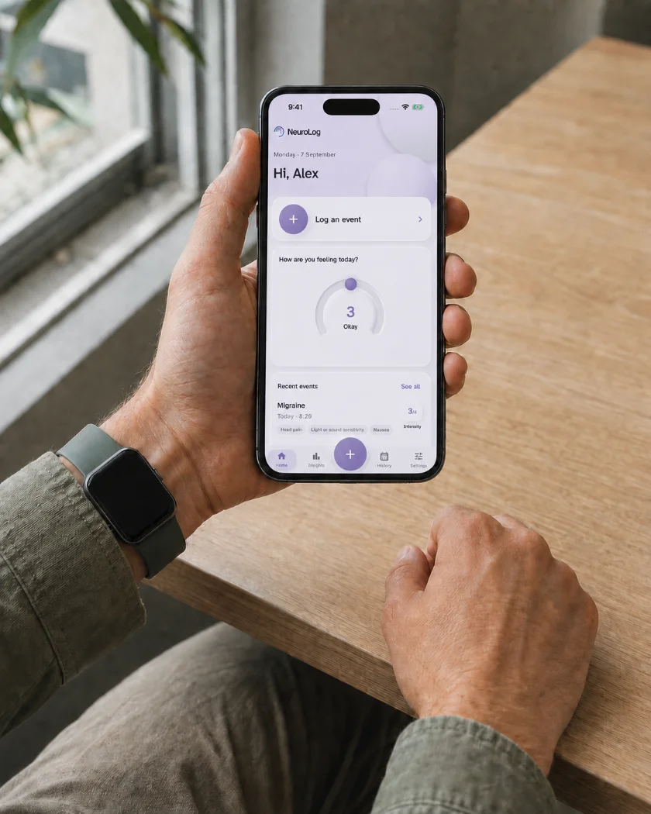

Understand what happens between appointments.
Our technology links wearable data to neurological events (such as seizures, intrusions and migraines) for people living with episodic neurological conditions.
A mobile app and web portal for patients, clinicians and researchers.
Ready for the next appointment.
Record neurological events and symptoms, then review them alongside sleep and activity from your wearable. Keep the details that matter to you, including timing, intensity and the effect on your day.
The clinical dashboard is designed for patients and clinicians to review together. Choose the period since the last appointment and see summaries of events, symptoms, medication adherence, sleep and activity.

From collection to research.
Longitudinal wearable data and timestamped event records, with data curation and exports designed for your existing Python or MATLAB workflow.
Our Melbourne team has over ten years’ experience in epilepsy and wearables. We handle the preparation between data collection and analysis, so study teams can focus on their research.
Privacy and security.
We will never sell your data. Data is encrypted in transit and at rest. Sharing controls are designed around categories: share wearable measurements with your clinician, for example, while keeping personal notes private.
Research participation is a separate choice, with consent for each study. Read our privacy policy.
Using NeuroLog.
Do I need a smartwatch?
No. Event and symptom logging works without one. You can connect compatible health data through Apple Health on iPhone or Health Connect on Android. Available measurements depend on your device and permissions.
How do I join the pilot?
Use the form below to register your interest as a patient, clinician or researcher. We will be in touch about pilot access. Joining the waitlist does not enrol you in a research study.
Does NeuroLog detect or predict events?
No. NeuroLog records the events you report. It does not detect or predict events, diagnose conditions, recommend treatment or send emergency alerts.